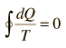
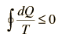

Entropy and the Carnot Cycle
|
|
The efficiency of a heat engine cycle is given by For the ideal case of the Carnot cycle, this efficiency can be written |
Using these two expressions together
If we take Q to represent heat added to the system, then heat taken from the system will have a negative value. For the Carnot cycle
which can be generalized as an integral around a reversible cycle
|  | Clausius Theorem |
For any part of the heat engine cycle, this can be used to define a change in entropy S for the system

or in differential form at any point in the cycle
For any irreversible process, the efficiency is less than that of the Carnot cycle. This can be associated with less heat flow to the system and/or more heat flow out of the system. The inevitable result is
|  | Clausius Inequality |
Any real engine cycle will result in more entropy given to the environment than was taken from it, leading to an overall net increase in entropy.
| More details about the Clausius Inequality |
Carnot cycle concepts
Heat engine concepts
Entropy concepts
| HyperPhysics***** Thermodynamics | R Nave |